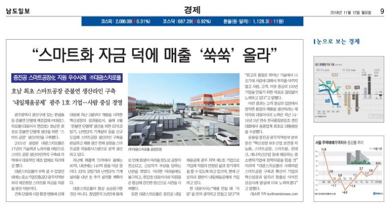

[남도일보]
중진공 스마트공장化 지원 우수사례 ㈜대광스치로폴
광주광역시 광산구에 있는 판넬용 등 준불연 단열재 제조업체 ㈜대광스치로폴(대표이사 한갑호) 호남권 최초로 준불연 단열재 생산을 위한 ‘스마트 공장’ 생산라인을 구축했다.
2001년 설립된 대광스치로폴은 17년의 기술력과 노하우를 바탕으로 스마트 공장 생산라인까지 구축돼 지역에서 대표적인 제조 업체로 자리매김 했다.
대광스치로폴이 우뚝 설 수 있었던 데에는 중소기업진흥공단 광주지역본부의 제조현장 스마트화 자금을 지원을 받은 덕분이다.
건축 단열재 시장 환경 변화에 선제 대응해 지난 3월부터 개발을 시작한 혁신성장의 성과물로서, 올해 6월 ‘준불연 단열재’생산을 위한 EPS코팅기, 난연EPS 기계설비 등을 신규 도입해 스마트공장 생산라인 구축을 완료하고 제품 생산 전체 공정을 스마트공장 자동화시스템으로 본격 생산하고 있다.
지난해 매출액 70억에서 올해는 90억, 내년에는 140억 원을 이상 중이다. EPS 코팅기와 난연EPS 기계설비를 내년 초 추가 설치할 계획이다.
대광스치로폴이 항상 승승장구한 것은 아니다. 창업한지 3년만에 화재로 인해 회생이 어려울 정도로 공장이 전소되고, 근로자가 부상을 당하는 난관을 겪었다. 이러한 어려움에도 불구하고, 한갑호 대표이사와 직원들은 합심해 강인한 정신으로 시련을 극복했다.
또한 대광스치로폴은 중진공 내일채움공제 광주 지역 제1호 기업으로 가입해 직원의 안정된 삶과 장기재직을 할 수 있도록 하고 있으며, 현재 근로자의 절반이 내일채움공제에 가입하고 있다.
한 대표이사는“제품 만들 때 ‘사람’을 먼저 생각하고 만들고 있다”며 “최고의 품질은 뛰어난 기술에서 나오기에 사람에 대해서 투자를 아끼지 않고 사원, 고객, 이웃 중심의 100년 기업을 만들기 위한 목표로 끊임없이 노력하고 있다”고 말했다.
이런 결과는 고객 중심의 입장에서 정직한 품질의 제품을 생산하려는 재직자와 대표이사의 노력은 지난 14~16년 3년 연속 전국품질분임조 경진대회에서 동종업계 최초로 대통령상을 수상했다.
윤용일 중진공 광주지역본부 본부장은 “혁신성장 8대 산업 초연결 지능화, 스마트공장, 스마트팜, 핀테크, 에너지신산업 등에 해당하는 중소벤처기업에 정책지원을 힘쓸 것”이라며 “대광스치로폴의 사례처럼 스마트공장 구축과 확산이 기업의 혁신성장과 일자리 창출로 이어진 성공사례 발굴에 더욱 노력하겠다”고 말했다. /임소연 기자 lsy@namdonews.com